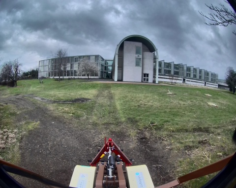
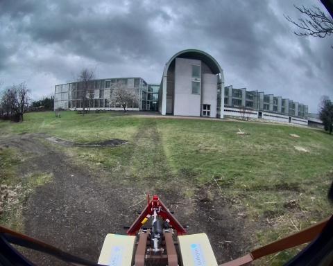
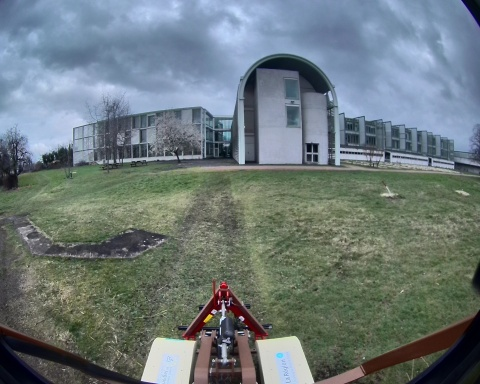
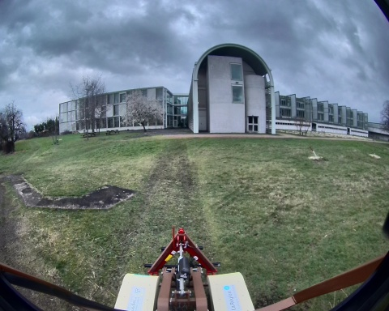
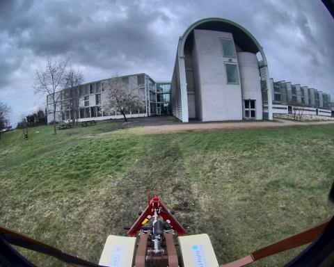
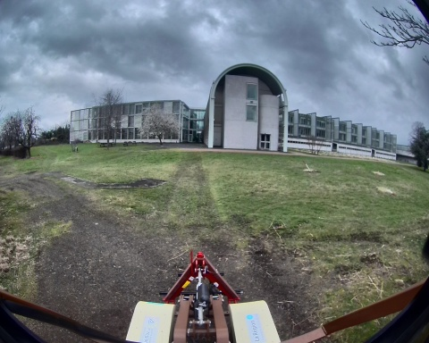
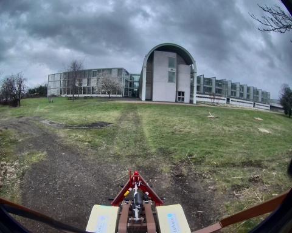
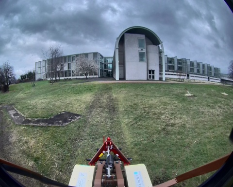
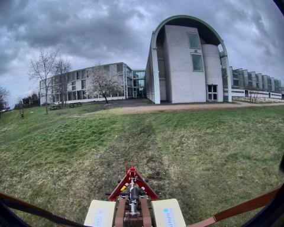

 

Chemin complet : /data/synchro_data/Innodura/Agrivia/Données/2025_bag/pente_2_13_03_2025


Files: pente_2_13_03_2025_0.db3
Bag size: 1.1 GiB
Storage id: sqlite3
Duration: 24.982471817s
Start: Mar 13 2025 15:01:24.244387527 (1741874484.244387527)
End: Mar 13 2025 15:01:49.226859344 (1741874509.226859344)
Messages: 22836
Topic information: Topic: /robot/localisation/filtered_odom | Type: nav_msgs/msg/Odometry | Count: 245 | Serialization Format: cdr
Topic: /robot/imu/mag | Type: sensor_msgs/msg/MagneticField | Count: 2486 | Serialization Format: cdr
Topic: /robot/imu/velocity | Type: geometry_msgs/msg/TwistStamped | Count: 2486 | Serialization Format: cdr
Topic: /robot/joint_states | Type: sensor_msgs/msg/JointState | Count: 2486 | Serialization Format: cdr
Topic: /tf | Type: tf2_msgs/msg/TFMessage | Count: 682 | Serialization Format: cdr
Topic: /robot/localisation/angular_speed | Type: romea_localisation_msgs/msg/ObservationAngularSpeedStamped | Count: 2486 | Serialization Format: cdr
Topic: /alpo/lidar/pointcloud_synchro | Type: sensor_msgs/msg/PointCloud2 | Count: 133 | Serialization Format: cdr
Topic: /robot/joystick/joy | Type: sensor_msgs/msg/Joy | Count: 237 | Serialization Format: cdr
Topic: /robot/base/bridge/vehicle_controller/odom | Type: nav_msgs/msg/Odometry | Count: 248 | Serialization Format: cdr
Topic: /robot/robot_description | Type: std_msgs/msg/String | Count: 1 | Serialization Format: cdr
Topic: /alpo/camera/image_synchro | Type: sensor_msgs/msg/Image | Count: 133 | Serialization Format: cdr
Topic: /robot/localisation/course | Type: romea_localisation_msgs/msg/ObservationCourseStamped | Count: 242 | Serialization Format: cdr
Topic: /robot/localisation/attitude | Type: romea_localisation_msgs/msg/ObservationAttitudeStamped | Count: 2486 | Serialization Format: cdr
Topic: /robot/localisation/status | Type: romea_localisation_msgs/msg/LocalisationStatus | Count: 249 | Serialization Format: cdr
Topic: /robot/gps/ntrip/rtcm | Type: mavros_msgs/msg/RTCM | Count: 320 | Serialization Format: cdr
Topic: /robot/gps/nmea_sentence | Type: nmea_msgs/msg/Sentence | Count: 747 | Serialization Format: cdr
Topic: /robot/imu/imu_data_str | Type: std_msgs/msg/String | Count: 2488 | Serialization Format: cdr
Topic: /robot/localisation/position | Type: romea_localisation_msgs/msg/ObservationPosition2DStamped | Count: 249 | Serialization Format: cdr
Topic: /robot/localisation/twist | Type: romea_localisation_msgs/msg/ObservationTwist2DStamped | Count: 249 | Serialization Format: cdr
Topic: /tf_static | Type: tf2_msgs/msg/TFMessage | Count: 6 | Serialization Format: cdr
Topic: /robot/gps/vel | Type: geometry_msgs/msg/TwistStamped | Count: 203 | Serialization Format: cdr
Topic: /robot/gps/fix | Type: sensor_msgs/msg/NavSatFix | Count: 249 | Serialization Format: cdr
Topic: /parameter_events | Type: rcl_interfaces/msg/ParameterEvent | Count: 0 | Serialization Format: cdr
Topic: /rosout | Type: rcl_interfaces/msg/Log | Count: 510 | Serialization Format: cdr
Topic: /diagnostics | Type: diagnostic_msgs/msg/DiagnosticArray | Count: 230 | Serialization Format: cdr
Topic: /robot/imu/data | Type: sensor_msgs/msg/Imu | Count: 2487 | Serialization Format: cdr
Topic: /robot/base/controller/odometry | Type: romea_mobile_base_msgs/msg/OneAxleSteeringMeasureStamped | Count: 249 | Serialization Format: cdr
Topic: /robot/base/controller/odom | Type: nav_msgs/msg/Odometry | Count: 249 | Serialization Format: cdr